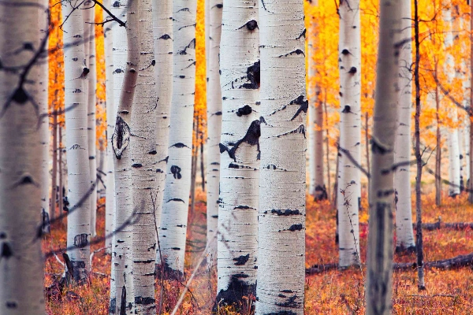

There are many ways to idenfity an aspen, they have lots of dishtinguishable traits. Some people may struggle to comprehend the uniqueness of an aspen tree, but it is really quite simple.
There is one and only one way true conessuers of trees identify an aspen tree.
They are able to tell it is an aspen tree simply because of the way it is.
Where can you find them?
Aspens can be found in many places, their favorite place to pop up is in higher altitudes, such as Utah or Colorado.
This is where aspen trees thrive.
Finding an aspen tree in its natural habitat is where you will find it at its happiest.

Yellow and Orange Aspen Trees in the Fall
General Tree Ranking
There are many types of trees, so we have compiled a ranking of trees to show you just how great aspen trees are.
Aspen Trees
Any Other Tree
That's right folks! No other tree really compares!